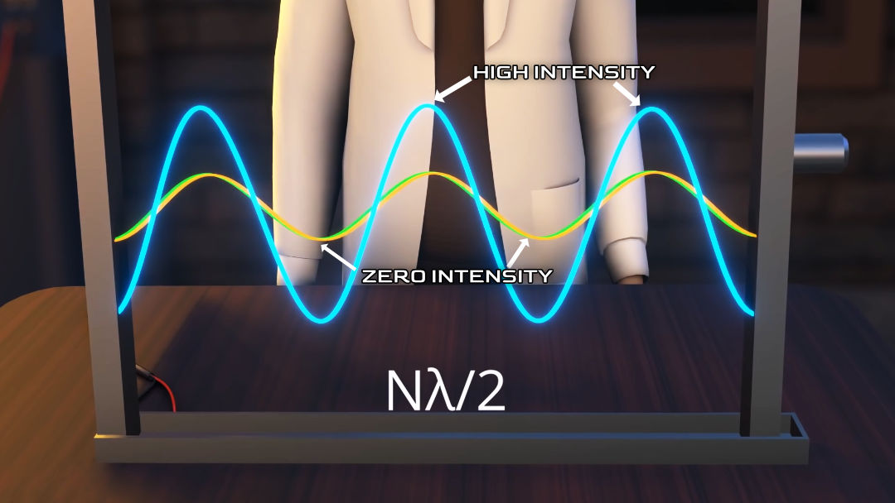

Microwave ovens work almost like magic; they cook food without any external heat and with good uniformity compared to conventional methods. But, how are they able to do it? and, despite their advantages, some are worried about health hazards due to electromagnetic radiation. Will microwaves cause you any harm? Let's find answers to all these questions in this article. So, let’s get into it.
Invention of microwave oven
It may amaze you to learn that the invention of the microwave oven was accidental. The scientist, Percy Spencer, was performing experiments on adevice called a magnetron. Magnetrons generate powerful microwave radiation. During this experiment, he observed that the candy bar in his pocket was completely melted. That's when it occurred to him to explore the applications of microwaves in cooking food. From this experiment, It was observed that a high powered travelling microwave has the capability of heating food. But, of course, this incident raises the question of, what was in the microwave that melted the candy bar?
What are the microwaves?
Microwaves are electromagnetic waves in a particular spectrum. Like any other electromagnetic waves, they have oscillating electric and magnetic fields. If you track amplitude of the wave in a specific area, you can observe this oscillation (refer fig 1). In the chocolate melting accident case, the oscillating electric field component of the electromagnetic wave is responsible for cooking the food. Now let me explain how these oscillating electric fields cook food.
Role of oscillating electric fields in cooking
Most of the food that we consume has water in it. Water is a polar molecule. The hydrogen atoms of the water molecule are placed at an angle of 104 degrees from each other and both the hydrogen and oxygen atoms have charges (refer fig 2). This makes the water molecule behave like a dipole. When an electric field is applied to the water molecule, it starts to rotate due to the torque produced on the dipole. Since in electromagnetic waves the electric field oscillates continually, the water molecules will keep on oscillating. Due to this oscillating rotation, the molecules rub against each other and produce friction and heat in the food.
How to trap microwaves in the oven?
Now let me explain how to convert this heat generation concept into a workable product. To use the electromagnetic wave's energy efficiently, it must be reused several times. An efficient way of achieving this is to reflect it and keep it confined in a particular area. We need a reflector for that. The best way of making this reflector is with the help of metal. The metallic surface causes the microwave to reflect from its surface and if you keep one more reflector at the source side the reflection will keep on continuing (refer fig 3a). This way we will be able to trap the energy of electromagnetic radiation within a volume.
However, the most efficient way of trapping electromagnetic wave energy is by use of a technique called resonance cavity. This method also increases the intensity of electromagnetic waves. Let’s understand the concept of resonance cavity using a simplified approach of standing waves.
What is a standing wave?
A standing wave is a stationary wave that fluctuates in time but does not propagate in space. Standing wave is different from a normal travelling wave (refer fig 3b).
Standing wave is formed when two waves having the same amplitude and the same frequency, moving in opposite directions, are superimposed on each other. Now let's assume two electromagnetic waves, which are travelling in the opposite direction. Let’s see at one instant in fig 4a. You can see that waves are 180 phase differences. When you add both the electromagnetic waves, they will perfectly cancel.
Now, let's take another instant as shown in fig 4b. The resultant is a bigger sinusoidal curve. Now take one more instant (refer fig 4c). Here we get an even bigger sinusoidal wave as the output. By comparing the results of these three instances, it is clear that the resultant electromagnetic wave just oscillates in its position without travelling.
How to achieve standing waves?
Now let me explain how to produce two oppositely travelling waves practically. We will get a clear solution for this if we understand how electromagnetic waves get reflected on a metal surface. We know that when a wave meets a reflector, it returns to its source. Can you spot any connection between this reflected and incident wave in fig 5a? The reflected wave is, in fact, the wave that would have travelled forward if there were no reflector. First, of course, you have to fold this imaginary part 180 degrees, as shown in fig 5a. Now let’s add one more reflector, this time at the side of the source as shown in fig 5b. This will reflect the same way again and produce a third wave, and this process will repeat.
However, if you keep the second reflector at the intersection point of the first and second waves, the third wave produced after the reflection will be the same as the first wave (refer fig 5b). This is a clever arrangement. When you arrange the second reflector this way, we will see only two waves traveling in opposite directions instead of many reflected waves and chaos. If you find out the resultant of them, it will be a standing wave (refer fig 5c).
This is a well known fact. The standing waves are produced when the distance between the source and reflector is an integer multiple of half wavelength (nλ/2). Thus, the dimensions of the closed structure are determined by the wavelength of these waves. Now, a fun fact, just measure the cavity length of the microwave oven in your kitchen. It will be an integer multiple of this wavelength.
It is clear from fig 5c that some points of the standing wave are at high energy intensity and some other points are at zero intensity. Due to this, there would be many spots in a microwave, some cold and others hot.
Microwave oven experiment
Let's do a simple experiment at home. Using cheese, you can see cold and hot spots of your kitchen's microwave oven. Just keep the shredded cheese inside your microwave oven for one minute. After one minute you will see the cheese surface with a few hot spots. The presence of such hot spots causes a microwave to cook food unevenly. In short, the cavity resonance technique we used to trap the microwaves more efficiently has led to creation of cold and hot spots. To overcome this problem, nowadays, a microwave consists of a rotating plate which helps the food cook evenly.
How do microwaves generate in an oven?
The component responsible for producing microwaves is known as a magnetron. A magnetron emits microwaves in all directions (refer fig 7). To know more about the magnetron, please click here. To confine the wave to propagate in one dimension, the magnetron is attached to the waveguide. From the waveguide, the waves come into the cooking chamber to heat food.

Can any electromagnetic wave cook the food?
Another question that has to be answered is whether microwaves are the only electromagnetic waves capable of heating food or if there are any other waves that could accomplish the same result? Any electromagnetic waves have the capability to heat food, but they come with certain limitations.
Waves with long wavelengths can easily pass through our food so that they won't be able to transfer much energy to it. Additionally, to get standing waves, large devices would be required.
Shorter wavelength waves are absorbed more rapidly on the outer surface of the food, so they do not penetrate far enough down to cook it evenly. If we want to cook deeply, we have to switch to a very high power source that would be unfeasible. In the microwave range, the suitable frequency for all practical purposes and which did not require a licence was 2.45 GHz.
Are microwave ovens safe?
The powerful microwaves produced by an oven can be hazardous to humans if we come in direct contact with them, but don’t worry. The electromagnetic radiation produced by a microwave oven is always confined within it, it will never leave the chamber. So there is no point in worrying about the health hazards caused by the electromagnetic radiation of microwave ovens.
Microwave heating vs convection heating
Now the most interesting question: why is heating with a microwave oven superior to conventional heating methods? Since microwaves can penetrate the food, the food is cooked from the inside as well as the outside. Moreover, It cooks food faster than other conventional methods. The convection method cooks food from the outside in. This is because the heat energy has to travel from outside to inside. But this method can be useful on some occasions. When you need food with a crisp surface and a soft interior or baking, the convective heating method is preferred. Due to this reason, modern microwave ovens come with a convection option for baking purposes.
I hope you have learned how a microwave oven works and gained some additional details about a microwave oven. Thank you for reading this article!